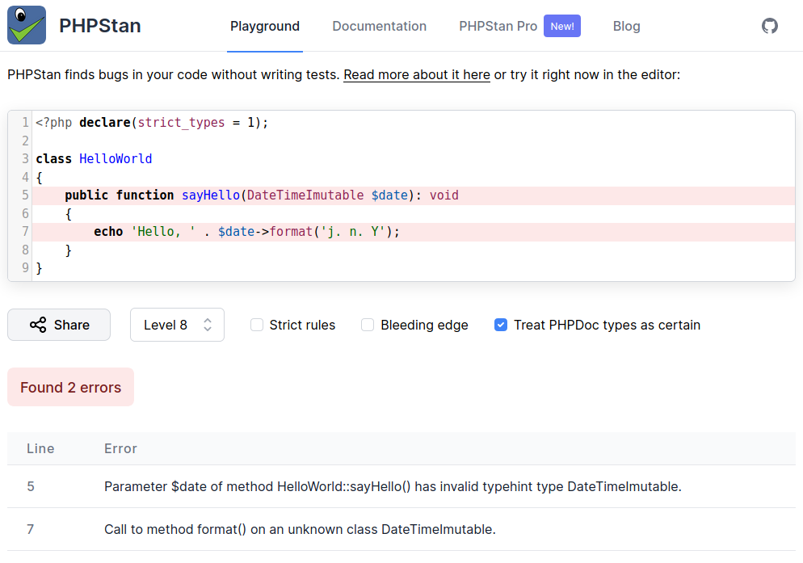
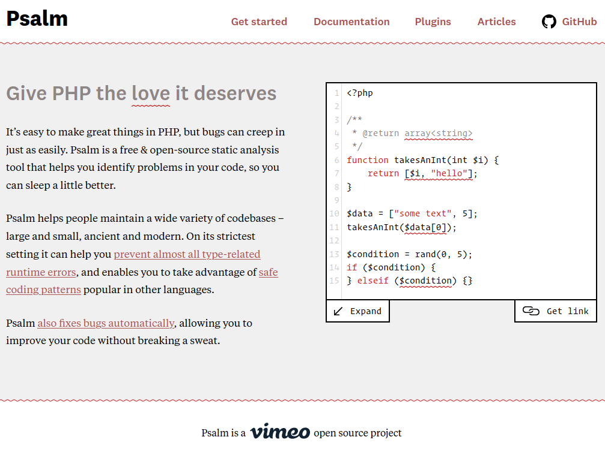

My Symfony functional testing toolbox
Alessandro Lai / @AlessandroLai
PUG Milano - 20 gennaio 2020, online
Who am I?
- Alessandro Lai
-
Lead developer @

- @Jean85
- @AlessandroLai
- PHP UG Milan Coordinator
- PHP-FIG Secretary
Slow test suites
If a build / test suite takes more than 10 minutes to run, it's worthless.
The testing pyramid
E2E
Functional tests
Unit tests
https://martinfowler.com/articles/practical-test-pyramid.html
...and what was going wrong
E2E
Functional tests
Unit tests
My pyramid foundation
Functional tests
Unit tests
Static code analysis
Static code analysis
|  https://phpstan.org |  https://psalm.dev |
Speed up your tests
Parallelization & isolation
When you ran multiple tests on the same DB at the same time, you run intro troubles...
-
facile-it/paraunit-testcase(deprecated) -
dama/doctrine-test-bundle
Kernel caching
facile-it/paraunit-testcase was built on top of something else...
-
liip/functional-test-bundle(forked)class MyTest extends WebTestCase { public function test(): void { $this->getContainer()->get('...'); } } -
facile-it/symfony-functional-testcase
Good fixtures hygiene
DB vendor is part of your system
- It's not worth it to change DB vendor only for tests
Validation of entities
-
I used strong validation before persistence
in multiple projects -
Strict validation ensures that data is good
once it reaches the DB
Good fixtures lead to good tests
-
Fixtures should resemble real data
AKA don't put invalid data in your entities -
Build
*FixtureBuilderutility classes to create fixtures in known valid states -
Randomized fixtures are good
(use Faker or something else, since it got retired...)
Fixture belong outside of src/
- Fixtures are testing tools, not production code
-
maglnet/composer-require-checker
will report them as failures
Using the tools
No reload, no cleanup required
public function testDeleteFoo(): void
{
// ...
$client->request('DELETE', '/api/foo/123');
$this->assertNull($fooRepo->find(123));
// no cleanup or fixture reload required!
}
public function testPutFoo(): void
{
// ...
$client->request('PUT', '/api/foo/123', $payload);
// ...
}
Getting services from the container
/**
* @template T of object
* @param class-string<T> $serviceId
*
* @return T
*/
protected function getService(string $serviceId): object
{
$service = $this->getContainer()->get($serviceId);
$this->assertInstanceOf($serviceId, $service);
return $service;
}Testing a service directly
public function testFindLatestReturnsOnlyOneResult(): void
{
$repository = $this->getService(FooRepository::class);
$result = $repository->findLatest();
$this->assertCount(1, $result);
$this->assertContainsOnlyInstancesOf(Foo::class, $result);
}Testing entity validation (1/2)
protected function assertIsValid(object $entity): void
{
$validator = $this->getContainer()->get('validator');
$result = $validator->validate($entity);
$this->assertCount(0, $result, 'Validation failed: ' . $result);
}
protected function assertValidationFailsAtPath(string $path, object $entity): void
{
$violationList = $this->getContainer()->get('validator')->validate($entity);
foreach ($violationList as $violation) {
if ($violation->getPropertyPath() === $path) {
$this->increaseAssertionCount();
return;
}
}
$this->fail('No violation found at path ' . $path);
}Testing entity validation (2/2)
public function testNewFooIsValid(): void
{
$this->assertIsValid(new Foo('baz'));
}
/** @dataProvider invalidDataProvider */
public function testFooIsInvalid(Foo $foo, string $errorPath): void
{
$this->assertValidationFailsAtPath($errorPath, $foo);
}
public function testFooIsInvalidWithWrongBar(): void
{
$foo = new Foo();
$this->assertIsValid($foo);
$foo->setBar('invalid');
$this->assertValidationFailsAtPath('bar', $foo);
}Pitfalls
Doctrine Test Bundle limitations
-
Commands with implicit commits break it (
TRUNCATEor any schema change) -
No logs nor after-test DB inspections
(but invalid queries still crash) -
Last resort: force transaction commit
\DAMA\DoctrineTestBundle\Doctrine\DBAL\StaticDriver::commit() -
Tests can fail due to concurrency & DB locks
(but Paraunit retries those)
Data providers are a strange place...
- PHPUnit's data providers are executed ahead of time
- Do not interact with the entity manager there
All containers are not the same...
public function test(): void
{
$client = self::createClient();
$this->assertNotSame(
$this->getContainer(),
$client->getContainer(),
"Those are not the services you're looking for..."
);
}...so you may want the right one
protected function getService(
string $serviceId,
KernelBrowser $client = null
): object
{
return $this->getContainer($client)->get($serviceId);
}
protected function getContainer(KernelBrowser $client = null): ContainerInterface
{
if ($client) {
$clientContainer = $client->getContainer();
return $clientContainer->get('test.service_container');
}
return parent::getContainer();
}Thanks! Questions?
Contacts
- https://alessandrolai.dev (slides & prev talks here!)
- alessandro.lai85@gmail.com
- alessandro.lai@facile.it (we are hiring!)
- @Jean85
- @AlessandroLai
- @MilanoPHP